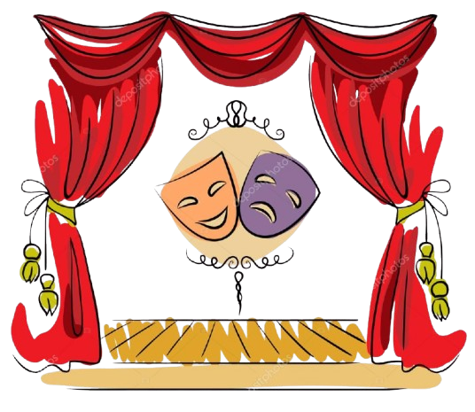

Recitare! Vi ricordate del copione scritto all'inizio della caccia?
Ogni squadra ne ha preparato uno... ma sarete così fortunati da ritrovare proprio il vostro? Tornate da noi e lasciate che sia la dea bendata a decidere quale copione interpreterete (solamente in questa prova potete farvi guidare dal più fortunato della squadra, che potrà direttamente interagire con noi).
La prova consiste nel mettere in scena il copione estratto. Siate coinvolgenti, appassionati, teatrali! Ogni membro della squadra dovrà scegliere un personaggio tra quelli indicati e utilizzare gli oggetti assegnati per rappresentarlo al meglio.
Scegliete una location esterna il più medievale possibile e realizzate una ripresa. Potete utilizzare qualsiasi dispositivo per la ripresa, ma assicuratevi che la qualità sia buona. Al termite, una volta soddisfatti del risultato, tornate da noi con il video della vostra recita, il quale verrà valutato da una severa giuria di esperti teatranti. Intanto avrete una pausa di 20 minuti per riposare e prepararvi al meglio per la prossima prova.
Se il responso sarà positivo riceverete la chiave per proseguire.
